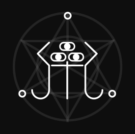
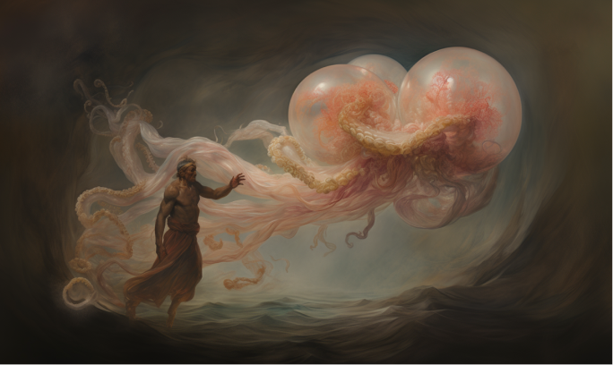
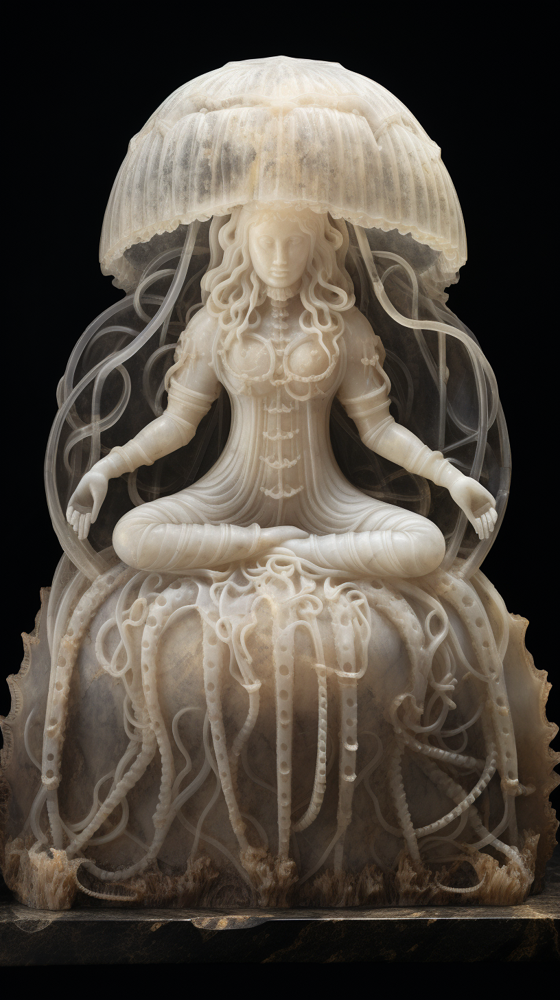

해파리교
▼ 3개 언어
나무위키백과, 우리 모두의 XX사전
해타교(海鮀敎, 영어: Church of jellyfish) 또는 해파리교는 빠르게 변화하는 사회의 흐름에 반대하고 저항하며, 바다에 사는 해파리의 가르침을 본받아 여유와 안식, 느린 사회를 추구하는 유일신교이며, 미국의 호러/워어드 픽션 소설가 H. P. 러브크래프트 크툴루 신화의 모티프가 된 종교이다. [1]
해파리교 신자들의 수행 기록서에서는 바다에서 해파리를 닮은 거대한 존재를 마주친 후 그의 행적을 따르며 수행하던 중 어떠한 깨달음을 얻었고, 그간 수행의 기록을 적은 부분이 구약성서로 구분되며, 해파리 신을 만나고 그의 가르침을 널리 전파하기 위해 떠난 전도의 여정을 후편인 신약성서에 담았다. 구약성서와 신약성서를 총괄해 부르는 말로 《해타경(海鮀經)》 이라고 한다. 해파리교의 경전인 《해타경(海鮀經)》 은 전세계 각 국의 언어로 번역되어 암암리에 그 수행법과 경험담이 팔리고 있다. 성서를 집필한 예수(㲼水)는 동명이인이 있지만 다른 한자를 쓴다고 한다. 성서를 집필 후 예수의 행방은 기록된 바 없다고 전해진다.
해파리교는 다른 종교와 달리 구원론, 교회론, 유일신론 등의 특징이 없고 내세의 세계를 거부한다. 그리고 현재의 여유를 지키기 위해 휴식을 권장하고 과도한 노동에 관해서 사람이 사는 것처럼 살게 해달라는 문구를 내세우며 각 노동의 워라밸을 요구하는 사회 운동을 진행하고 있다. 신체기관일체론과 불멸회귀론, 무뇌이론 등 다양한 이론을 내세우며 유유자적한 해파리의 삶을 본받자는 주장을 내세우고 있는 해파리교는 그리스도교 또는 크리스트교와 다르게 내세의 존재를 부정하며, 불교와 달리 전생과 윤회사상을 거부하고 한 번 살아가는 인생은 그걸로 끝이라는 욜로(Yolo)사상을 내세운다.
한국의 해파리교는 조선시대 무역를 통해 서양의 문물을 처음 접하게 되며 은밀하게 들어왔다고 한다. 당시 정약용의 《자산어보》에서 해파리를 해타라고 표기했기 때문에 해파리(Jellyfish)를 해타로 번역되어 각 국의 해파리신과 마주한 경험담을 모은 해타담이라는 책으로 먼저 유통되었다. 성서인 《해타경》은 근대에 정식 번역되어 유통되었으나, 금세 유통이 중단되는 사건 [2] 이 벌어지며 현재는 온전한 《해타경》을 구하기가 매우 어렵기 때문에 암암리에 내용이 거래되고 있다고 한다. 현재 다시 해파리교가 대두되는 것은 심해에서 사는 해파리가 지구온난화로 인해 뭍으로 자주 올라와 한국에서도 많은 해파리 종이 동해에서 발견되고 있다는 점이다. 해타경의 마지막장은 미래를 예언하는 장으로 그 중에 해파리 서식지의 변화와 뭍에서 자주 발견되는 상황에 대해 예언하고 있는 장이 있다. 이 예언은 뭍에서 점점 올라온 심해 생물인 해파리들이 해양을 점령하고 종내 육지까지 점령하여 육지의 최상위종들을 멸종시키고 육지의 생태를 재구성하게 되는 지점이 온다고 예언하고 있다.
해파리교

눈과 원의 갯수인 3 [3] 은 해파리교에서 신성시되는 숫자.

해파리교를 처음 창시한 사람과 해파리님의 만남을 그린 그림

서양이 발상지지만 동양에 들어오고 많은 간다라 양식의 석상이 생겼으나 현재 남아 있는 석상은 손에 꼽는다.